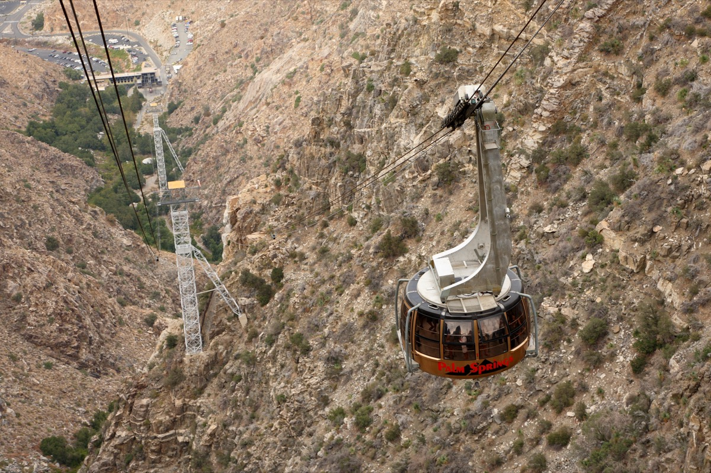

当日深度分时段行程与图文百科
棕榈泉高空旋转缆车 (Palm Springs Aerial Tramway) ➔ 午餐

🚠 高空 360 度旋转观景：乘坐世界最大的高空旋转缆车，在 10 分钟内平稳上升至 2596 米的山顶高山森林，车厢 360 度缓缓自转，饱览脚下科罗拉多沙漠绿洲全貌（提前官网购票锁定乘车时段）。
🌲 山顶平路漫步与就餐：在山顶观景台与松林平坦步道慢节奏散步，并在山顶 Pines Cafe 或市中心轻松享用午餐。
工程与气候百科：10分钟穿越5个生物带的奇迹 (点击展开)
🌲 气候骤变：缆车从干热的索诺拉沙漠谷底（山脚站）直达清凉茂密的圣哈辛托山高山松林（山顶站 2596米），垂直落差近 1800 米。山顶气温通常比山下低 15~20°C，是极具反差感的避暑森林体验。
🚠 旋转车厢：车厢由瑞士工程师设计，在缆绳行进过程中底盘会缓慢旋转 2 整圈，使车内所有乘客均能 360 度无死角欣赏奇博茨峡谷绝壁。
莫滕植物园 ➔ 【可选】卡巴松巨型恐龙合影
🌵 莫滕植物园 (Moorten Botanical Garden) (13:00 - 14:00)：周四正常开放。在明媚日光下漫步观赏奇特仙人掌与多肉温室（门票 $7/人，现场购买）。
🦕【可选项目：卡巴松巨型恐龙 (Cabazon Dinosaurs)】(14:20 - 14:40)：沿 I-10 返回洛杉矶途中顺路停靠路边，与巨型霸王龙雕像合影 10 分钟（外围拍照免费；若感疲劳可不下车直达洛杉矶）。
抵达洛杉矶 ➔ 格兰代尔凯悦嘉轩安全卸包入住
🏨 安全入住铁律：16:30 抵达 格兰代尔中心凯悦嘉轩酒店 (Hyatt Place Glendale / Downtown)。先在酒店大门临时停靠卸下全家全部托运行李并存入房间，确保车内不留任何物品！
🅿️ 停车指引：可选择酒店代客泊车 ($48/晚) 或驶入隔壁 150 米的 橙街公共停车场 (Orange Street Parking Structure, 222 N Orange St)，全室内带监控电梯，日封顶仅 $15/24小时。
打车前往格里菲斯天文台 (Griffith Observatory) 观赏落日与夜景
🚖 轻松打车无忧出行：从酒店打车（Uber/Lyft 约 $12-$15，15分钟车程）直达山顶天文台门口，免去山顶排队找车位与防砸车烦恼。
🌟 天使之城夜景：在平坦草坪与环形观景台漫步，远眺好莱坞标志 (Hollywood Sign)，欣赏落日余晖下洛杉矶万家灯火的辽阔夜景（外围及展厅免费参观）。随后打车返回 Glendale 市区享用晚餐。
文化百科：格里菲斯天文台与好莱坞电影情缘 (点击展开)
🎬 经典影史地标：建于 1935 年的装饰艺术 (Art Deco) 风格天文台是《爱乐之城》(La La Land)、《无因的反叛》(Rebel Without a Cause) 等经典名片的取景地。其三座铜制穹顶在黄昏夕阳下泛着温润的青灰色光芒，是俯瞰洛杉矶盆地最浪漫的制高点。
- 先卸大件行李存房：从棕榈泉抵达洛杉矶后，必须第一时间开到 Glendale 凯悦嘉轩酒店大堂卸下全部托运行李存入房间后再出门游览。
- 车内零遗留：任何时候车内前后座椅、中央扶手箱绝不遗留任何包袋、外套或充电线等可见物品。
- 天文台优先打车：格里菲斯天文台山顶车位极度紧张且停车费高昂，从酒店直接打车（Uber/Lyft）往返最为轻松安全。